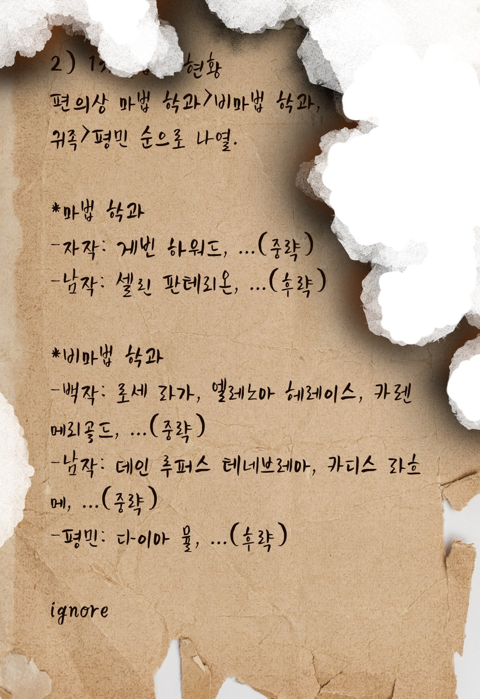
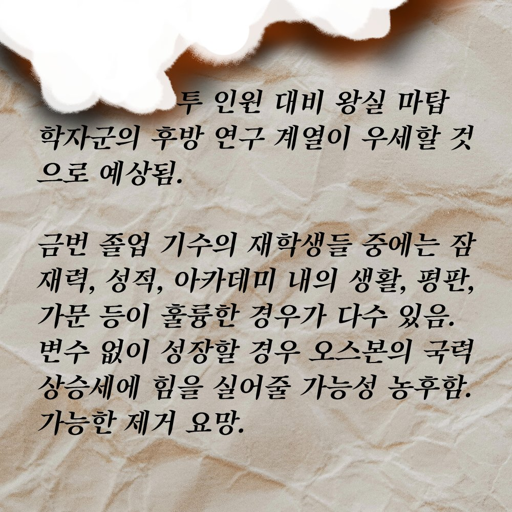

#3-2화 스파이?2022.10.06. 트윗게시일
이제 프롬 파티의 시작까지 하루도 남지 않았습니다. 다들 그날 입을 옷을 고르며 파트너를 신청할지 말지 떠들썩합니다.
시험도 완전히 끝났겠다, 파티 때까지는 실컷 놀아도 되겠죠! 오래간만에 아카데미에 활력이 도는 것 같습니다.
하지만 그때.
이런 즐거움에 찬물을 끼얹듯 멀리서 시끄러운 소리가 들려옵니다.
…스파이? 이게 무슨 소리일까요? 고등부라면 우리를 말하는 것이 틀림 없습니다.
소리가 나는 곳으로 가보면 중등부의 교복을 입고 있는 학생이 세 명 있습니다. 적발 머리의 학생, 금발 머리의 학생, 녹발 머리의 학생입니다.
고등부 학생들은 그들에게 의문을 건네자 적발 머리 학생이 우리를 발견하곤, 사색이 되어 해명합니다.
"저, 저희는 아무것도 몰라요! 그저 어쩌다 지나가는 말을 들었을 뿐이라고요. 정말이에요!"
우리의 추궁에 금발 머리의 학생이 곤란해하며 입을 엽니다. 그의 눈에는 불신의 눈빛이 담겨져 있습니다.
"선배님들은…. 스파이가 아닌 겁니까? 그렇다고 맹세하면 말해드릴게요. 스파이가 아니라면 맹세할 수 있는 거잖아요. 그게 아니라면 말씀 못 드려요."
고등부 학생들은 그 말에 스파이가 아니라고 맹세합니다.
녹발 머리 학생은 여전히 미심쩍은 얼굴이었지만 앞으로 걸어나와 이야기를 시작합니다.
"오늘, 알미나 교수님께 제출해야 할 것이 있어 아침 일찍 방으로 찾아갔었어요. 아시다시피 교수님들이 쓰시는 방은 고층이라 잘 찾아가지 않잖아요. 그래서 방을 찾느라 헤매고 있었는데, 어떤 방문 앞에서 소리를 들었어요."
녹발 머리 학생은 잠깐 숨을 고르고는 침을 꿀꺽 삼키고 목소리를 낮춰 말을 잇습니다.
"'고등부에 스파이가 있다, 정확히 몇 명인지는 모르겠지만 대충 예상했던 학생들이 맞는 것 같다, 매그놀리아나 바로크, 칼트 쪽인 것 같다, 아니면 셋 다일 수도 있다.' …라는 내용이었습니다."
녹발 학생은 아직도 그 기억을 떠올리면 섬짓한지 안색이 약간 창백합니다.
"이게 전부예요. 더 자세한 건 모릅니다. 어쩌면 제가 잘못 들었을 수도 있고요."
…스파이라니, 이게 대체 무슨 소리인가요? 그러니까, 우리들 중에 스파이가 있다는 소리인가요?
모두가 일순 말문이 막혔습니다. 혼란스러운 침묵이 주위에 가라앉아, 아무 소리도 들리지 않습니다. 세 학생 또한 생각지도 못한 정보에 불안해하고 있습니다.
"저도 지금 이게 거짓말이라고 믿고 싶어요! 이런 아카데미에 스파이가 들어왔다는 건, 어, 엄청난 문제라고요! 그리고…!"
쏟아지는 질문과 추궁에 울먹이던 녹발 머리의 학생을 대신해, 금발 머리의 학생이 앞으로 나옵니다.
"이건 제가 어제 기숙사 건물에서 발견한 거예요. 이걸 보시면 아시겠죠."<>
금발 머리의 학생은 우리에게 불에 타다 남은 편지를 보여주었습니다.


곧바로 이해할 수 없는 문자의 나열은, 금발 머리의 학생이 편지를 다시 숨기면서 사라졌습니다.
붉은 머리 학생은 그럼 이만 실례하겠다며 두 학생의 팔을 잡고 도망치듯 자리를 떠났습니다.
……알 수 없습니다.
하지만 모두가 공통적으로 느끼고 있을 것은, 그냥 지나치기에는 너무나 불편한 소문이라는 것입니다.
우리는 찜찜한 마음을 느끼며 세 사람이 시야에서 사라지는 것을 지켜볼 수 밖에 없었습니다.
웅성거림도 잠시, 서로를 의심스럽게 보던 고등부 학생들은 일단은 밤이 늦었으니 기숙사로 돌아가기로 하였습니다.
이 와중에 파티 분위기가 어두울까봐 카렌은 시무룩한 기색이었다.그런 카렌에게 킬리칸이 슬쩍 다가와 말을 건넨다.
 "아카데미에서 제일 몸조심해야 할 사람이 너잖아. 메리골드, 괜찮다면 기숙사까지 바래다 줘도 될까?"
"아카데미에서 제일 몸조심해야 할 사람이 너잖아. 메리골드, 괜찮다면 기숙사까지 바래다 줘도 될까?"
"어머, 그건 모르죠~? 나름대로 제 몸을 보호할 실력을 키워 왔답니다. 하지만 불마법 천재가 바래다준다니 그보다 안심될 수는 없겠죠? 고맙게 받아들일게요~"
불마법 천재 라는 말에 의기양양해진 킬리칸은 잔뜩 우쭐한 표정이 되어서는 제 가슴을 두드린다.
 "나만 믿어. 누가 스파이든 간에 네 머리카락 한가닥 닿게 두지 않을 테니까."
"나만 믿어. 누가 스파이든 간에 네 머리카락 한가닥 닿게 두지 않을 테니까."
그러고는 카렌을 에스코트하며 소란에서 점차 멀어져 기숙사로 향한다.과할정도로 주변을 경계하며 두리번거리는 모습에 카렌은 입을 손끝으로 가린 채 웃어버렸다.
"후후, 믿음직 하네요..~ 그나저나.. 만약 스파이가 리저브와 무척 가까운 사이였다면 어떻게 할 텐가요?"
 "누구냐에 따라 다르겠지? 에밀이라면 바로 교수님에게 이를 거고."
"누구냐에 따라 다르겠지? 에밀이라면 바로 교수님에게 이를 거고."
킬리칸은 말을 하다 멈추고 입을 가리고 웃는 카렌을 잠시간 바라보다 살며시 다가가 눈을 접으며 생글 웃고 마저 대답한다
 "그것보다 더 소중한 사람이라면 나도 스파이가 되어버릴까~?"
"그것보다 더 소중한 사람이라면 나도 스파이가 되어버릴까~?"
"에밀은 대체 어떤 취급을 받고 있는 건가요...? 아니, 서로에게 그런건가~"
가까이 다가와 웃어 보이는 킬리칸의 모습에 카렌은 눈만 깜박이다 장난스레 입꼬리를 말아 올린다.
"그렇게나 소중한 사람이라면 나라쯤은 버려도 상관 없다는 말이군요~?"
 "애초에 애국심도 별로 없어. 그러니 내 마음이 가는 대로 행동하는 거지."
"애초에 애국심도 별로 없어. 그러니 내 마음이 가는 대로 행동하는 거지."
킬리칸은 언제나처럼 거침없이 말을 내뱉는다. 하지만 몇 초 뒤, 혹여라도 카렌의 집안이 왕국에 대한 충성심이 강한 편이었나 걱정이 들어 뒤늦게 말을 덧붙인다
 " ...어디까지나 가정인 거 알지? 그럴 일 없을 테니까."
" ...어디까지나 가정인 거 알지? 그럴 일 없을 테니까."
킬리칸의 거침없이 뱉어졌다 덧붙여진 말을 들으며 카렌은 작게 키득거린다. 그리곤 한 걸음 가까이 다가가 속삭이듯 소곤거린다.
"제 가문은 나라에 관심이 많지만... 저는 그렇지 않으니 걱정 말아요~ 제 눈치를 볼 필요는 없다는 뜻이죠. 오, 물론 제가 사는 지역은 사랑하고 있어요~"
가까워진 거리에 순간 킬리칸은 몸을 굳혔다가 카렌의 속삭임을 듣고 머쓱한 표정을 짓는다. 속이 훤히 들여다 보인 기분이랄까
 "누가 눈치를 봤다고..... "
"누가 눈치를 봤다고..... "
시선을 피하며 태연을 가장한 대답을 내뱉다 잠깐 뭔가 떠올린다. 그러고보니 카렌의 첫 춤은 예정자가 있다고 했었지. 프롬 승낙을 받았을 때는 너무 기뻤기에 신경쓰지못한 부분이나 프롬을 목전에 둔 지금은 그것이 못내 아쉬운 킬리칸이었다. 첫 프롬파티의 첫 춤은 되지 못하더라도 그녀의 기억 속의 첫 춤은 자신이 되고싶었다. 그런 생각이 들자 킬리칸은 카렌을 흘깃 바라보고는 입을 연다.
 "...그나저나 우리 언제 한 번 춤을 맞춰봐야 하지 않겠어?"
"...그나저나 우리 언제 한 번 춤을 맞춰봐야 하지 않겠어?"
 "넌 능숙하니 괜찮겠지만 난 아직 춤에 대해 초보자라 리허설 없이 잘 할 자신은 없는걸? 시간 언제 돼, 카렌?"
"넌 능숙하니 괜찮겠지만 난 아직 춤에 대해 초보자라 리허설 없이 잘 할 자신은 없는걸? 시간 언제 돼, 카렌?"
누가봐도 긴장했음이 여실히 드러나는 몸짓하며 어긋나는 시선에 카렌이 지그시 킬리칸을 바라보았다. 자신과 달리 많은 감정이 솔직히 내보여진다는 것은 이렇게도... 이내 카렌은 그저 한 번 웃고 입을 연다.
"파티에서 질리도록 춰야 할 텐데, 리허설 까지요~? 춤은 늘 환영이지만요! 시간은 파티가 시작되기 전 언제까지고 괜찮답니다~"
카렌의 말에 표정이 밝아진 킬리칸은 아카데미 외벽에 걸려있는 고풍스러운 벽시계를 흘깃 바라보았다.
 "프롬 시작 전이면 약간 촉박하겠군."
"프롬 시작 전이면 약간 촉박하겠군."
그렇게 말한 킬리칸은 갑자기 한발자국 뒤로 물러서더니 허리를 약간 숙이며 카렌에게 손을 내밀었다. 표정에 장난기가 가득 섞여있었다.
 "그렇다면 지금 짧게 맞춰보는 건 어떠시겠습니까, 카렌 메리골드 영애?"
"그렇다면 지금 짧게 맞춰보는 건 어떠시겠습니까, 카렌 메리골드 영애?"
불현듯 손을 내밀어 오는 킬리칸의 모습에 카렌은 놀라 눈만 깜박였다. 하지만 곧 내밀어진 손이 민망해지기 전에 빙긋 웃으며 카렌은 제 손을 킬리칸의 손 위로 가볍게 얹었다.
그리고 순식간에 상체를 가까이이해 킬리칸의 귓가에 속삭였다.
"킬리칸의 춤을 이 카렌 메리골드가 확실히 봐드리도록 하죠~"
기까워진 거리에 킬리칸의 몸이 약하게 움찔거렸으나 다행히 표정에 당황함이 묻어 나오진 않았다. 입이 조금 마르는 기분이 들었으나 내색하지않고 약하게 카렌의 손을 마주 잡고는 괜히 더 장난스러운 말투로 대꾸한다
 " ...내가 잘 못 추면 다 크뤼센티움 탓이다? 내 춤 선생은 그 녀석이었으니까."
" ...내가 잘 못 추면 다 크뤼센티움 탓이다? 내 춤 선생은 그 녀석이었으니까."
아는 이름이 나와 반가운지 카렌의 입꼬리가 올라간다. 킬리칸의 장난스러운 대꾸에 맞춰 농담조로 대답한다.
"미아의 춤실력과 가르침엔 모자름이 없을텐데요~? 후훗"
짧은 웃음을 흘린 카렌은 킬리칸의 인사에 보답하듯 고개를 숙이고는 인사한다
카렌의 말이 끝나자 킬리칸이 카렌의 허리에 손을 가져다 대었다. 그에 맞춰 카렌이 킬리칸의 팔 한쪽에 가볍게 손을 얹었다. 킬리칸은 입이 바짝 마르는 듯한 기분을 느꼈다. 굵고 단단했던 남성의 허리와는 달리 가늘고 부드러운 여성의 허리에 손을 대고있자 킬리칸답지 않게 떨려오기까지 했다. 크뤼센티움과 연습했던 대로 잘 할 수 있을까? 평소와 같은 확신은 들지 않았다. 상대가 완전히 달랐으니. 카렌에게 들리지 않게 작은 숨을 내뱉은 킬리칸이 말했다.
 " ...그럼 시작할게"
" ...그럼 시작할게"
말이 끝나고 킬리칸이 벤디미온에게 배운대로 스탭을 밟으며 다리를 옮겼다. 춤 동작이 어렵진 않았지만.. 킬리칸은 혹시라도 자신이 카렌의 발을 밟을까봐 온 신경 기울이느라 표정이 굳어졌다.
그 때, 귓가에 옅은 멜로디가 들려오자 킬리칸이 카렌을 바라보았다. 카렌은 몸을 가볍게 움직이며 능숙하게 박자를 맞추고 있었다. 즐거운지 그녀의 잇새로 흥얼거리는 곡조가 간간히 공간을 타고 울렸다.
빙그르 턴을 도는 카렌에게서 느껴지는 은은한 꽃향기, 달빛을 머금고 빛을 내는 아름다운 금발머리가 턴에 맞춰 흩날리는 것에 시선을 뺏긴 킬리칸은 제 발 근처에 위치한 돌부리를 미처 보지 못하고 발이 걸렸다.
 "으앗?!"
"으앗?!"
킬리칸의 몸이 기우뚱 기울어진다. 다급히 주춤거리며 균형을 잡아보지만 이미 꼬여버린 스탭이라 결국 적당한 거리를 유지하지 못한 채 카렌과 몸이 부딪힌다. 부딪힌 충격으로 카렌의 몸이 흔들거리자 그녀의 어깨를 잡아 품에 넣은 건 의도하지는 않은 일이었다.
잠깐의 순간, 킬리칸의 품에 카렌이 들어오고 카렌의 눈동자가 상황을 파악하겠다는 듯 빠르게 깜빡였다. 어깨에 느껴지는 단단한 손의 감촉과 품에 카렌은 자신이 킬리칸에게 안긴건가? 생각했으나 킬리칸은 곧바로 카렌을 놓아주었다. 새빨개진 얼굴을 한채로 면목없다는 표정으로 킬리칸은 카렌을 바라보았다.
 "미안. 실수했어. 괜찮아?"
"미안. 실수했어. 괜찮아?"
카렌은 약간 느려진 호흡으로 킬리칸을 바라보다가 생긋 웃어보였다.
"괜찮아요~ 분명 괜찮은 춤사위였는데, 어째서 갑자기 꼬여버린건가요~?"
원인을 찾는척, 물음을 던지는 카렌이었다. 그녀의 귀끝은 방금 전의 해프닝으로 미미하게 붉어졌으나 옆 머리카락에 가려 킬리칸에게는 보이지 않았다. 카렌의 물음에 킬리칸은 입만 우물대며 난감한 표정을 짓는다. 이유를 말할 수 있을리가 없었다.
 "아 그건.. ....."
"아 그건.. ....."
킬리칸은 카렌의 표정을 살폈으나 당황한 자신과 달리 여전히 태연해 보이는 카렌이라 괜히 입이 씁쓸해지는 것을 느낀다. 바닥을 바라보자 이 사건의 원흉인 돌부리가 보였다. 킬리칸은 제 실수를 우연한 사고로 위장하기로 마음먹는다.
 "... 돌부리를... 잘못 밟았어."
"... 돌부리를... 잘못 밟았어."
수십, 수백번의 춤을 춰온 카렌에게 서툴게 춤을 추다가 실수까지 해버렸으니, 자신을 얼마나 어리숙한 사람으로 보았을까. 심지어 제 변명마저 서투름이 느껴졌기에 킬리칸은 속으로 한숨을 쭉 내쉬었다. 표정에 고스란히 제 자신에게로의 실망이 드러났지만 본인은 알지도 못한 채 실수를 만회하기 위해 킬리칸은 말을 덧붙인다
 "실전에서는 실수하지 않을게. 맹세해."
"실전에서는 실수하지 않을게. 맹세해."
평소와는 달리 힘 없이 축 쳐진 킬리칸의 음성에 카렌의 눈이 동그랗게 떠졌다.
음성 뿐만 아니라 표정또한 착잡함이 그대로 나타나있는 킬리칸을 바라보다 카렌은 잠깐 망설이곤 킬리칸의 팔에 얹었던 손을 들어 킬리칸의 뺨을 살짝 감쌌다가 떨어진다. 찰나의 순간이었으나 킬리칸에게는 카렌의 부드러운 손의 감촉이 뺨에 오래 남는 듯 했다.
 " ... 자신만만하게 추자고 해놓고 이렇게 실수를 하니.. 볼 낯이 없어서."
" ... 자신만만하게 추자고 해놓고 이렇게 실수를 하니.. 볼 낯이 없어서."
솔직하게 답했으나 이 답변이 카렌에게 프롬의 걱정거리로 떠오를까봐 킬리칸은 애써 입꼬리를 올리며 웃었다. 그런 킬리칸을 바라보며 카렌 또한 빙긋 마주웃고는 부드럽게 대답한다
"춤은 둘이서 추는게 아닌가요. 만일 실수할 것 같다면 제게 맡겨요~ 킬리칸의 발 정도는 가볍게 피할 수 있답니다?"
카렌의 미소에 한심함이나 우려의 기색은 없었다. 그것에 킬리칸의 불안은 조금 덜어지는 듯 했다.
 "네 말이 맞아, 이렇게 잘 추는 상대가 있는데 초보자 혼자 너무 고군분투했군. 실수하지 않도록 하겠지만 혹시 모를 상황엔 부탁할게."
"네 말이 맞아, 이렇게 잘 추는 상대가 있는데 초보자 혼자 너무 고군분투했군. 실수하지 않도록 하겠지만 혹시 모를 상황엔 부탁할게."
말이 끝남과 동시에 벽시계가 커다란 종소리를 내었다. 0시가 넘어 프롬날을 알리는 소리이기도 했다. 킬리칸은 마음을 새롭게 다잡기로 한다. 아직 프롬까지는 시간이 남아있으니 방에 돌아가 연습을 하면 이런 실수도 없어질 것이라 생각하며 카렌에게서 살며시 몸을 떨어트린 킬리칸은 허리를 가볍게 숙여 제 파트너에게 인사한다.
 "실수의 만회는 프롬에서 하도록 하지. 막무가내의 연습에 어울려줘서 고마워, 카렌. 그럼 프롬 때 봐."
"실수의 만회는 프롬에서 하도록 하지. 막무가내의 연습에 어울려줘서 고마워, 카렌. 그럼 프롬 때 봐."
카렌이 마주 인사를 하는 것에 살짝 고개를 숙이고는 킬리칸은 몸을 돌렸다. 카렌의 손이 닿았던 제 뺨을 문지르며 킬리칸은 기숙사로 향했다.